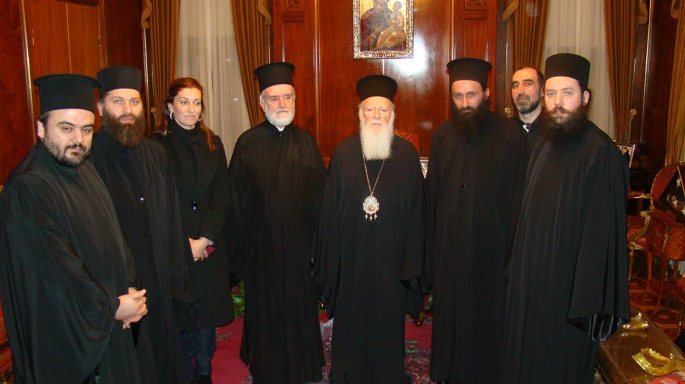
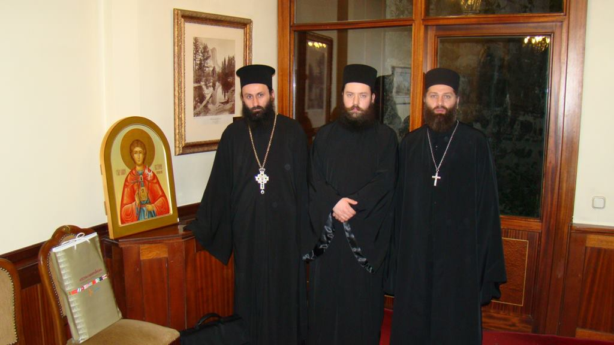
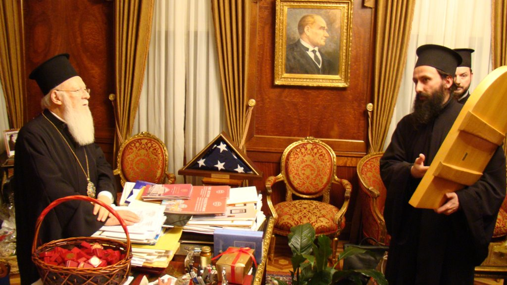

14 01 2012 (1946 дней 4 часа назад)

Патриарх Константинопольский Варфоломей заверил православных Абхазии в том, что Вселенская патриархия сделает все возможное для канонического разрешения церковного положения в Абхазии. Об этом накануне рассказали журналистам представители делегации абхазского духовенства о результатах своей встречи с главой Константинопольской церкви в Стамбуле 9 января.

По приглашению Вселенской патриархии 9 января 2012 года в Стамбуле (Константинополе) в здании Патриархии состоялась встреча Патриарха Константинопольского Варфоломея с представителями Совета Священной митрополии Абхазии архимандритом Дорофеем (Дбар), иеромонахом Андреем (Ампар), иеродиаконом Давидом (Сарсания). На встрече также присутствовали члены Священного синода Константинопольской церкви и Межправославной комиссии.

памятный дар: икона святого Евстафия Аписльского
Патриарх Варфоломей сообщил о том, что Вселенская патриархия получила все документы, связанные с церковным вопросом в Абхазии и с решениями, принятыми на церковно-народном собрании о создании Священной митрополии Абхазии с кафедрой в Новом Афоне 15 мая 2011 года.
Представители Священной митрополии подробно изложили всю проблематику абхазского церковного вопроса.
"Церковный вопрос народа Абхазии невозможно решить в рамках двустороннего диалога с Грузинской православной церковью по причине прошедшей грузино-абхазской войны (1992-1993 годов) и сложных политических отношений, и его невозможно решить в ходе любых других двусторонних переговоров без участия Вселенской патриархии", - сказал архимандрит Дорофей (Дбар).
Патриарх Варфоломей I сообщил, что обращение церковно-народного собрания Абхазии будет рассмотрено в ближайшее время Священным синодом Вселенской патриархии.
Канонические границы Грузинской православной церкви распространялись на Абхазию до начала грузино-абхазской войны 1992-1993 годов. Однако на протяжении 17 лет православные абхазы не желали окормления под Грузинской православной церковью, и де-факто Абхазская церковь независима. В 2009 году управляющий бывшей Сухумо-Абхазской епархией Грузинской церкви иерей Виссарион Аплиа принял решение о преобразовании епархии в Абхазскую поместную церковь с двумя кафедрами - Сухумской и Пицундской - на общем собрании всех абхазских священнослужителей.
Между тем, как отмечает радиостанция "Эхо Москвы", вопрос предоставления автокефалии Абхазской митрополии сейчас не стоит. Абхазские священники избегают этого слова. Они не требуют независимости Абхазской церкви, они просят Вселенский патриархат определить канонический статус, не исключая того, что со временем автокефалия и основание Абхазской православной церкви возможно.
Абхазская делегация – представители священной абхазской митрополии - были приняты Вселенским патриархом впервые, это произошло официально, а значит, уже этот факт говорит о многом. О визите и его сути радиостанции "Эхо Москвы" рассказал председатель абхазской митрополии архимандрит Дорофей Дбар.
Вопрос автокефалии, по словам Дбара, зависит, прежде всего, от самих абхазов, от развития Абхазской церкви. Для этого необходимо объединение Церкви, переживающей сейчас раскол.
Между тем Дорофей Дбар открыто призвал священника Виссариона Аплиаа и его сторонников объединиться. Иерей Виссарион Аплиаа принял управление Сухумской епархией после того, как епископ Грузинской церкви покинул страну после августовского конфликта 2008 года. Урегулировать церковный вопрос он пытался с Русской православной церковью, в частности, в результате, на его обращения РПЦ направила в Новоафонский монастырь своего настоятеля игумена Ефрема, что вызвало возмущение среди части Абхазской церкви. 15 мая прошлого года был создан Совет абхазской митрополии, взявшей на себя управляющие функции до решения канонического вопроса – этот совет возглавил архимандрит Дорофей Дбар. Отец Виссарион оказался вне нового образования, но сторонники Аплиаа считают, что управление абхазской церковью – его прерогатива. Появились первые заявления о самоопределении Абхазской церкви. О невозможности получения автокефалии таким образом ранее заявляли представители как РПЦ, так и грузинских церковных властей. Однако для временного урегулирования в 2008 году возникли предложения о переходе абхазской церкви под управление РПЦ. До 2008 года прежний предстоятель РПЦ Патриарх Московский и Всея Руси Алексий II выступал категорически против присоединения к РПЦ приходов Грузинской церкви в Абхазии и Южной Осетии.
Ситуация с Абхазской церковью вполне объяснима и предсказуема, считает редактор журнала "Наука и религия" Марк Смирнов. Он полагает, что выйти из-под власти Грузинской церкви Абхазская церковь теоретически сможет.
Вопрос заключается в том, смогут ли договориться грузинский и константинопольский патриархат хотя бы о временном управлении. Но попасть под власть Москвы Абхазская церковь не может.
Абхазская церковь не сможет добиться признания своей независимости, это невозможно, полагает протодьякон Андрей Кураев. "Это все цирк с конями", - добавил он.
Абхазская церковь не сможет добиться изменения своего статуса, она является составной частью Грузинской церкви, заявил "Эху Москвы" грузинский митрополит Герасим.
Председатель Совета абхазской митрополии Дорофей Дбар в интервью радиостанции "Эхо Москвы" указал, что РПЦ сейчас игнорирует вопрос о статусе Абхазской церкви. Он указал, что и Российской и Грузинской Церквам следовало бы поддержать решение абхазского церковного вопроса Вселенским патриархатом.
сообщает РИА "Новости".
а также:
http://www.kavkaz-uzel.ru/articles/199100/
http://echo.msk.ru/blog/tengiztarba/847295-echo/